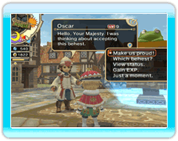
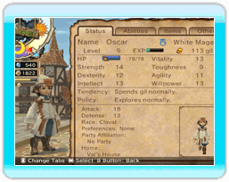

18 |
Opdrachten ophangen |
 |
Je kunt 's ochtends opdrachten opstellen bj het ochtendverslag. Deze opdrachten zullen op prikborden in het koninkrijk worden gehangen voor de avonturiers. Je kunt zoveel opdrachten ophangen als er prikborden zijn. Als je parken bouwt met priborden, neemt het aantal opdrachten die je kunt ophangen toe.
 Wanneer je een prikbord selecteert, zal een wereldkaart verschijnen met het kasteel in het midden. Zorg ervoor dat de cursor op een kerker komt te staan om gedetailleerde informatie te lezen over het gebied, de verschillende soorten opdrachten voor die kerker en de monsters die de avonturiers daar kunnen tegenkomen. Gebruik deze informatie om de geschikste kerker te selecteren voor de avonturiers van je koninkrijk. Wanneer je een prikbord selecteert, zal een wereldkaart verschijnen met het kasteel in het midden. Zorg ervoor dat de cursor op een kerker komt te staan om gedetailleerde informatie te lezen over het gebied, de verschillende soorten opdrachten voor die kerker en de monsters die de avonturiers daar kunnen tegenkomen. Gebruik deze informatie om de geschikste kerker te selecteren voor de avonturiers van je koninkrijk.Zodra je een bepaald punt in het spel hebt bereikt, kun je het kasteel zelf selecteren om opdrachten uit te geven, zoals aanvragen om van beroep te veranderen en de afkondiging van nationale feestdagen. Avonturiers zullen toestromen naar de opdrachten die op de prikborden staan. Spreek met hen om hun statistieken te bekijken en kies de avonturiers die je opdrachten moeten uitvoeren. Je kunt alleen de avonturiers zenden die niet werden gekozen om ervaring op te doen door de kerker te exploreren die ze hebben verkozen. |


|
 |
 |
 |